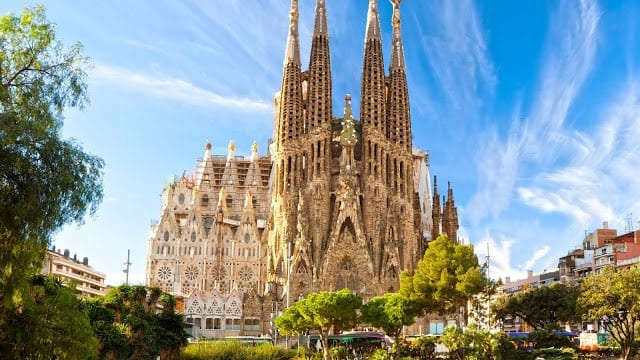

Sergio Leal <cristoleal@gmail.com>
    21:45 (há 25 minutos)
    para mim
    
    <!DOCTYPE html>
    <html lang="en">
    <head>
        <meta charset="UTF-8">
        <meta http-equiv="X-UA-Compatible" content="IE=edge">
        <meta name="viewport" content="width=device-width, initial-scale=1.0">
        <link rel="stylesheet" type="text/css" href="style.css">
        <title>Europa</title>
    </head>
    <body>
        <div class="header">
          <h1> lugares turísticos na Europa </h1>
          <p>As mais belas paisagens da natureza no velho continente.</p>
        </div>
          
        <div class="topnav">
          <a href="#Itália">Itália</a>
          <a href="#frança">França</a>
          <a href="#Espanha">Espanha</a>
          <a href="#Inglaterra">Inglaterra</a>
          
        </div>
          
        <div class="row">
          <div class="column">
            <div class="card">
              <h2><a name="Itália">Coliseu de Roma</a></h2>
              <h5><i>Italia</i></h5>
                
              <p>
                O principal ponto turístico da Itália é sem dúvida o Coliseu de Roma. É um dos monumentos mais famosos do mundo e atrai nada menos do que 4 milhões de turistas todos os anos. Sua construção se iniciou no ano de 72 d.C. e durante 
                décadas, serviu de palco para gladiadores que lutavam entre si ou com animais para um público de mais de 70 mil romanos.
              </p>
            </div>
            <div class="card">
              <h2><a name="França">Torre Eiffel em Paris</a></h2>
              <h5><i>França</i></h5>
                
              <p>
                É claro que a Torre Eiffel de Paris não poderia estar fora dessa lista. Construída em 1889, ela conta com 325 metros de altura e 1.665 degraus, e você não pode deixar de visitá-la quando estiver em Paris. Vista de
                 diversas partes da capital francesa, a Torre Eiffel é um marco de como um monumento pode tornar-se um símbolo de uma nação.
              </p>
            </div>
            <div class="card">
              <h2><a name="Espanha">Sagrada Família em Barcelona</a></h2>
              <h5><i>Espanha</i></h5>
                
              <p>
                Os principais pontos turísticos de Barcelona e da Espanha foram construídos pelo famoso arquiteto Antoni Gaudì. A principal obra e o ponto turístico mais famoso que ele construiu é a Sagrada Família de Barcelona, uma igreja com 
                uma grandeza incomparável e que ainda não está acabada, pela enorme quantidade de detalhes e pelo tamanho que foi projetada.
              </p>
             
            </div>
            <div class="card">
              <h2><a name="Inglaterra">Torre Big Ben de Londres</a></h2>
              <h5><i>Inglaterra</i></h5>
                
              <p>
                Outro ponto turístico famoso e um dos símbolos da Europa é o Big Ben de Londres. É no Big Ben que está instalado o parlamento 
                inglês e é parada obrigatória para qualquer turista que visita a cidade de Londres e a Inglaterra, independente da época.
              </p>
            </div>
            
          </div>
        </div>
        <div class="footer">
          
        </div>
    </body>
    </html>